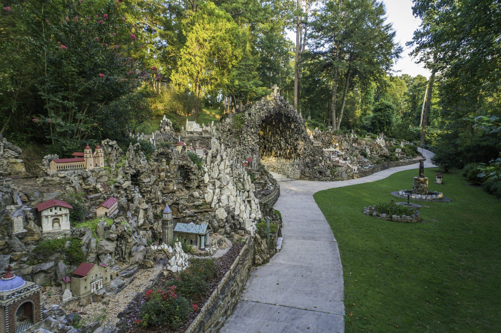
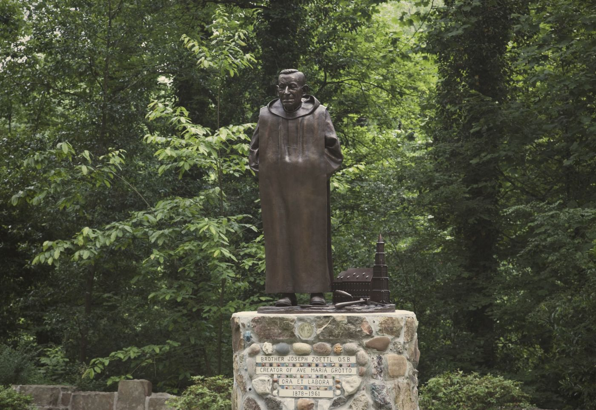
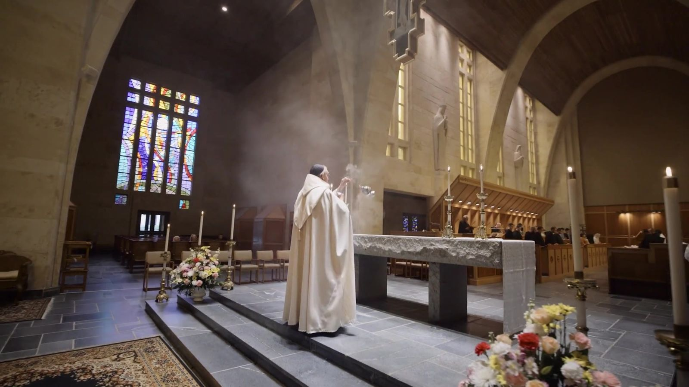
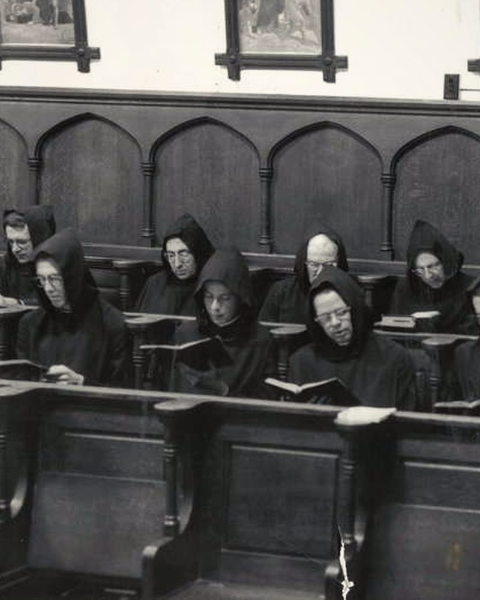
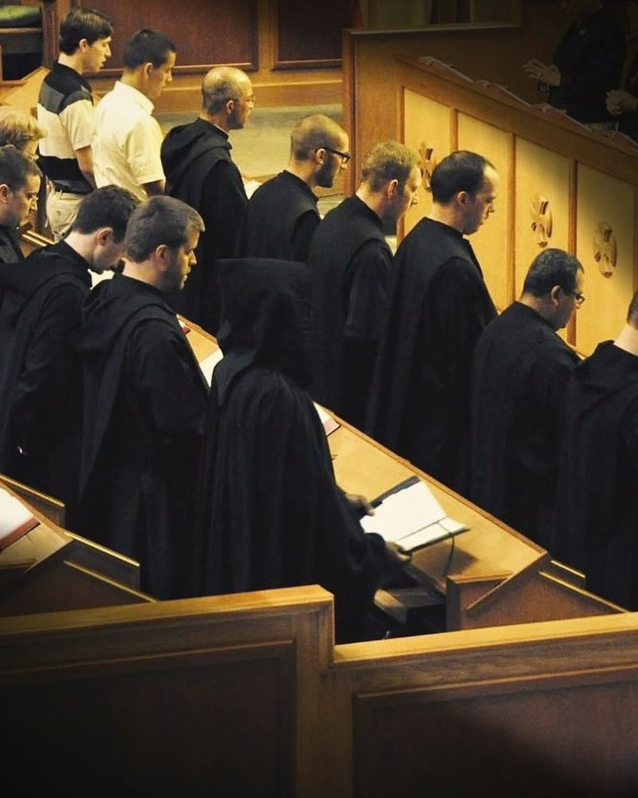
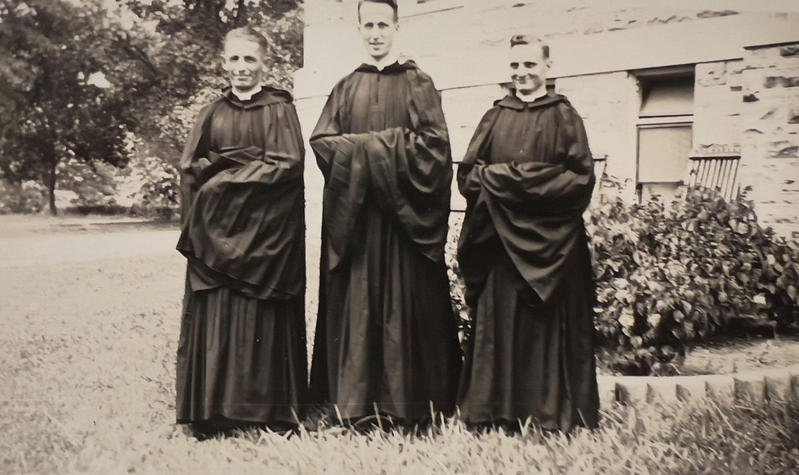

Ora et labora · since 1891
Monks who pray, build and teach
We are a community of Benedictine monks on a hill in Cullman, Alabama. We gather in choir five times a day, and between the prayers we work with our hands: a grotto of miniature shrines, bread, furniture, books, a farm, and a school for young men.
- 1891The abbey founded
- 1892The school opens
- 1934The Grotto dedicated
- 125Miniature shrines
- 5×In choir each day
Two works, one house
The Grotto and the school
are both works of the monks

Ave Maria Grotto
125 miniatures, built by one monk
Br. Joseph Zoettl spent more than forty years shaping the holy places of the world in cement, stone and broken glass, and set them in an old quarry on our grounds. Pilgrims have come since 1934.
Plan a visit
St. Bernard Preparatory School
Teaching here since 1892
A Benedictine boarding and day school for grades 7 to 12. The monks teach in its classrooms, coach its teams and pray with its students.
About the schoolOn the hill above Highway 278, one community keeps both.

A tradition of craftsman monks
Br. Joseph Zoettl is only the most famous
He came from Bavaria at fourteen, hoping to be a priest. An injured back kept him from ordination, so he became a brother and spent thirty years tending the abbey's powerhouse. In his spare hours he built a world in miniature.
He was not alone. Monks of St. Bernard have built its buildings, carved its altars, set its type, baked its bread and farmed its land for more than a century, and they still do.
And not only craftsmen and teachers: scholars and scientists, cooks and farmers, chaplains and soldiers, heroes and plain faithful men. There is room here for every kind of man.
 Builders
Builders Bakers
Bakers
A film · 8 minutes
The Benedictine Monks
of St. Bernard Abbey
A day among us: the choir, the farm, the classroom, the table.
Pray with us
The church is open.
Come and pray.
Five times a day the bell calls us to choir, as it has here since 1891. Guests are welcome at Mass and the Divine Office in the Abbey Church.
New to this? Curious, Christian or Catholic: start here
Having a hard day, or a joyful one? Find a psalm for it


The same prayer, sixty years apart. Photos: St. Bernard Abbey Archives.
The abbey's relics
More than a hundred saints keep us company
Our church keeps relics of St. Bernard and St. Benedict, of apostles and martyrs, of the first bishops of Trier, and of saints from Lourdes, Fatima and our own century. Come and see them, or look at them here.
See the relics

Since 1891
135 years on this hill
Bavarian monks cleared the forest and elected their first abbot in 1891, opened a school the next year, dedicated the Grotto in 1934 and built the Abbey Church of their own sandstone in 1964. In July 2026 the bells rang for the eleventh abbot.
Be part of our life
Three ways to join us
Let us pray for you
Ask the monks to remember you or someone you love at Mass and in the Office, or ask for a Mass to be offered.
Is God calling you?
Over the last decade St. Bernard has seen a growth in vocations that is rare among American Benedictine monasteries. Come and see how we live.